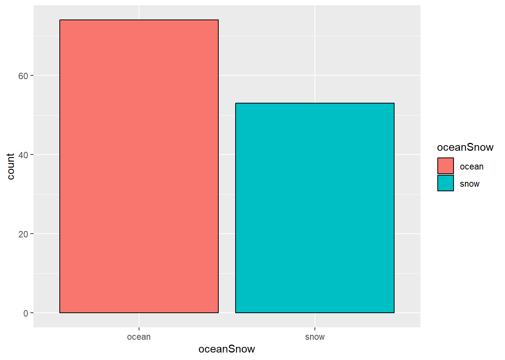
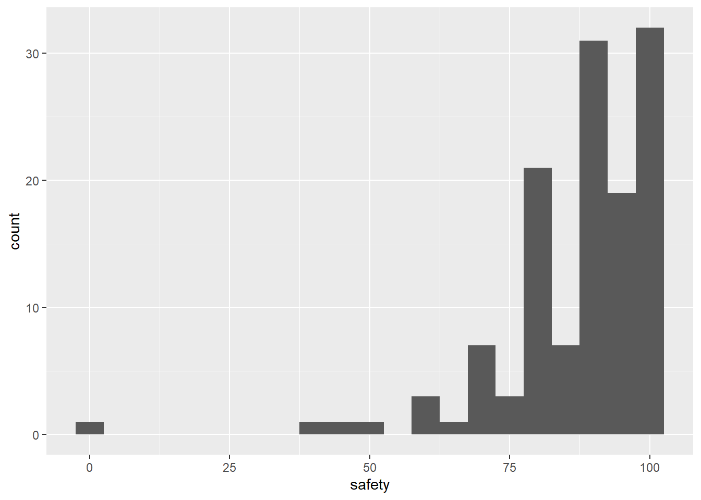
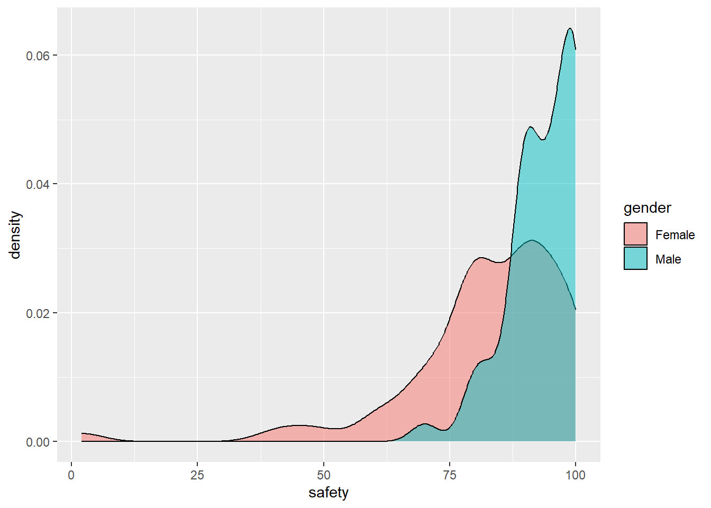
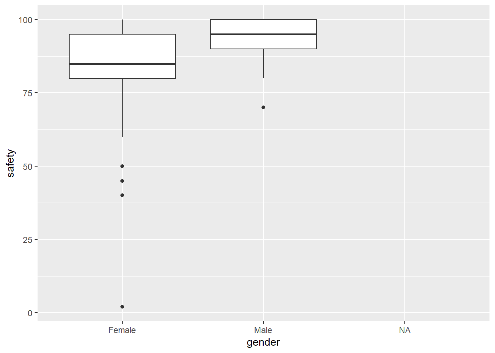

demo_df <- readr::read_csv("https://raw.githubusercontent.com/dsollberger/sml201slides/main/posts/04_categories/sml201survey.csv")SML 201
Start
Goal: Explore data wrangling with categorical variables
Objective: Compute counts, make bar graphs, and discuss data

Demographics Survey
Data
Queries
For the Demographics Survey, here are the variable names that represent the responses to the survey questions.
Example: Ocean or Snow?
demo_df |>
filter(!is.na(oceanSnow)) |>
ggplot(aes(x = oceanSnow)) +
geom_bar(aes(fill = oceanSnow),
color = "black",
stat = "count")
Example: Campus Safety
On a scale from 0 to 100—with 0 = very anxious and 100 = comfortable—how safe do you feel on campus?
summary(demo_df$safety) Min. 1st Qu. Median Mean 3rd Qu. Max. NA's
2.00 80.00 90.00 87.16 97.25 100.00 5 demo_df |>
ggplot(aes(x = safety)) +
geom_histogram(binwidth = 5)Warning: Removed 5 rows containing non-finite outside the scale range
(`stat_bin()`).
demo_df |>
ggplot(aes(x = safety, group = gender)) +
geom_density(aes(fill = gender),
alpha = 0.5)Warning: Removed 5 rows containing non-finite outside the scale range
(`stat_density()`).
demo_df |>
ggplot(aes(x = gender, y = safety)) +
geom_boxplot()Warning: Removed 5 rows containing non-finite outside the scale range
(`stat_boxplot()`).
Example: Flossing
summary(demo_df$flossing) Min. 1st Qu. Median Mean 3rd Qu. Max. NA's
0.000 2.000 5.000 5.224 7.000 14.000 10 Example: Football
demo_df |>
select(football) |>
separate_longer_delim(football, delim = ",") |>
count(football) |>
arrange(desc(n))# A tibble: 29 × 2
football n
<chr> <int>
1 <NA> 40
2 New York Giants 14
3 Philadelphia Eagles 13
4 San Francisco 49ers 11
5 Dallas Cowboys 7
6 Buffalo Bills 6
7 Houston Texas 6
8 New England Patriots 6
9 Arizona Cardinals 5
10 New York Jets 5
# ℹ 19 more rowsdemo_df |>
select(baseball) |>
separate_longer_delim(baseball, delim = ",") |>
count(baseball) |>
arrange(desc(n))# A tibble: 28 × 2
baseball n
<chr> <int>
1 <NA> 49
2 New York Yankees 16
3 Boston Red Sox 11
4 New York Mets 11
5 Philadelphia Phillies 11
6 Los Angeles Dodgers 8
7 Arizona Diamondbacks 4
8 Houston Astros 4
9 Miami Marlins 4
10 San Franciso Giants 4
# ℹ 18 more rowsExample: Sleep
Example: Residential Colleges
Quo Vadimus?
Assignments:
- Precept 2
- Group Membership
Project 1:
- assigned: Sept 23
- due: Oct 2
Exam 1: Oct 10
“The first [lesson] was always to make the choice to learn. That meant embracing change and mustering the courage to fail; success and failure are two sides of the same coin. You cannot succeed if at some point you haven’t failed” — Maria Ressa
Footnotes
(optional) How the data set was cleaned and anonymized
demo_raw <- readr::read_csv("Demographics Survey Survey Student Analysis Report.csv")
short_names <- c("timestamp", "currentCourse", "statsBefore", "classStanding",
"numCourses", "major",
"minor1", "minor2", "residentialCollege", "GPA", "gender",
"ethnicity", "hoursStudying", "birthMonth", "age", "height",
"shoeSize", "weight", "calories", "hoursExercise", "sleepTime",
"sleepDuration", "socialMedia", "smartPhones", "baseball", "football",
"basketball", "hockey", "politics", "religous", "Kinsey",
"happyCampus", "happyCity", "anxiousCourse", "highSchool", "prepared",
"drugUse", "firstGeneration", "languages", "safety", "makingFriends",
"campusTeam", "officeHours", "studyGroups", "retirement", "happiness",
"intelligence", "attractiveness", "favColor", "favNumber", "showers",
"brushing", "flossing", "washHair", "finAidInfluence", "futureCareer",
"numSiblings", "favMovie", "loneliness", "tidyness", "highSchoolGPA",
"SAT", "activeCampus", "numFriends", "studyMusic", "familyInfluence",
"campusLiving", "jobBool", "campusGroups", "attendance", "pancakesWaffles",
"coffeeTea", "dogsCats", "oceanSnow", "pineapplePizza", "campusAcceptance",
"hoursSocialMedia", "continents", "superhero", "supervillain", "season",
"handedness", "safety2", "laundry", "favClass", "favProfessor",
"anxiousSurvey")
demo_df <- demo_raw |>
# remove student names and Canvas metadeta
select(seq(7,179,2)) |>
# apply short column names (i.e. ease programming)
setNames(short_names) |>
# shuffle all rows (i.e. no longer alphabetical by student name)
sample_frac(1.0) |>
# mask majors who are underrepresented
group_by(major) |>
mutate(majorCount = n()) |>
ungroup() |>
mutate(major = ifelse(majorCount >= 3, major, "other")) |>
select(-majorCount) |>
# remove other possible ID factors
select(-c(ethnicity, minor1, minor2)) |>
mutate(age = ifelse(age < 18 | age > 21, NA, age))
readr::write_csv(demo_df, "sml201survey.csv")
(optional) Additional Resources
- Colors: useful glossary by Dr Ying Wei
- a great blog post about the
forcatspackage by Albert Kuo
Session Info
sessionInfo()R version 4.4.0 (2024-04-24 ucrt)
Platform: x86_64-w64-mingw32/x64
Running under: Windows 10 x64 (build 19045)
Matrix products: default
locale:
[1] LC_COLLATE=English_United States.utf8
[2] LC_CTYPE=English_United States.utf8
[3] LC_MONETARY=English_United States.utf8
[4] LC_NUMERIC=C
[5] LC_TIME=English_United States.utf8
time zone: America/New_York
tzcode source: internal
attached base packages:
[1] stats graphics grDevices utils datasets methods base
other attached packages:
[1] lubridate_1.9.3 forcats_1.0.0 stringr_1.5.1 dplyr_1.1.4
[5] purrr_1.0.2 readr_2.1.5 tidyr_1.3.1 tibble_3.2.1
[9] ggplot2_3.5.1 tidyverse_2.0.0
loaded via a namespace (and not attached):
[1] bit_4.0.5 archive_1.1.8 gtable_0.3.5 jsonlite_1.8.8
[5] crayon_1.5.3 compiler_4.4.0 tidyselect_1.2.1 parallel_4.4.0
[9] scales_1.3.0 yaml_2.3.8 fastmap_1.2.0 R6_2.5.1
[13] labeling_0.4.3 generics_0.1.3 knitr_1.48 htmlwidgets_1.6.4
[17] munsell_0.5.1 pillar_1.9.0 tzdb_0.4.0 rlang_1.1.4
[21] utf8_1.2.4 stringi_1.8.4 xfun_0.44 bit64_4.0.5
[25] timechange_0.3.0 cli_3.6.2 withr_3.0.1 magrittr_2.0.3
[29] digest_0.6.35 grid_4.4.0 vroom_1.6.5 rstudioapi_0.16.0
[33] hms_1.1.3 lifecycle_1.0.4 vctrs_0.6.5 evaluate_0.24.0
[37] glue_1.7.0 farver_2.1.2 fansi_1.0.6 colorspace_2.1-1
[41] rmarkdown_2.27 tools_4.4.0 pkgconfig_2.0.3 htmltools_0.5.8.1